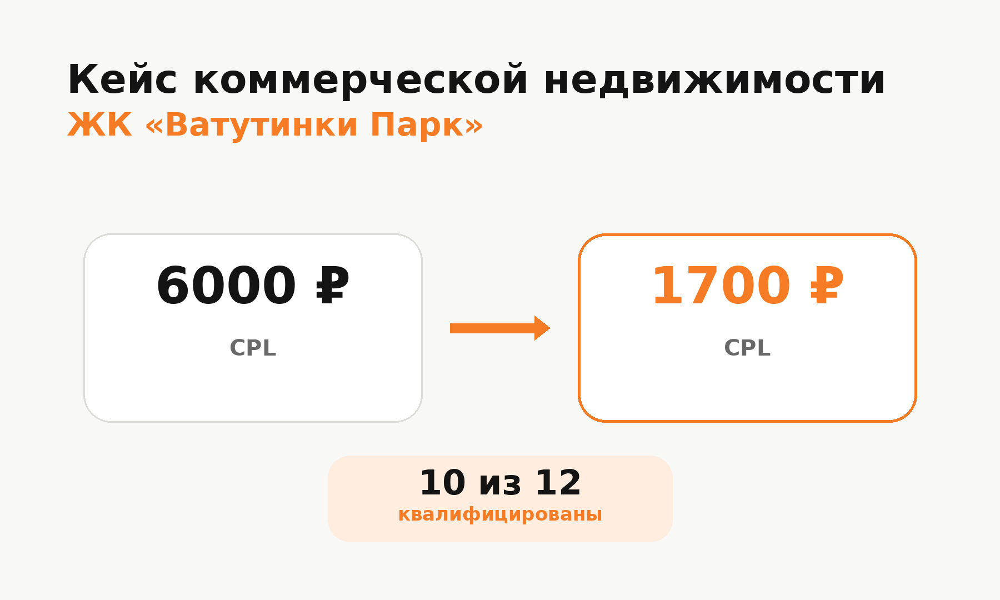

Блог о платном трафике
Яндекс Директ для коммерческой недвижимости: как получать целевые заявки
Яндекс Директ для коммерческой недвижимости может работать как на продажу объектов, так и на поиск арендаторов. Но подход здесь отличается от рекламы квартир: аудитория уже, объектов меньше, цикл принятия решения длиннее, а один формальный лид еще ничего не говорит о качестве рекламы.
В этой нише я смотрю в первую очередь не на количество заявок, а на то, кто их оставляет: собственник бизнеса, инвестор, представитель компании, брокер или человек, которому предложение вообще не подходит.
На практике результат зависит от связки из нескольких элементов: структуры кампаний, разделения спроса, оффера, посадочной страницы и передачи в рекламу нормальных данных о конверсиях.
Какие объекты можно продвигать через Яндекс Директ
Через Директ можно привлекать спрос практически на любые коммерческие объекты:
- офисы и помещения в бизнес-центрах;
- склады и складские комплексы;
- торговые помещения;
- помещения на первых этажах жилых комплексов;
- производственные площади;
- готовый арендный бизнес;
- коммерческие помещения для инвестиций;
- объекты на продажу и в аренду.
Но объединять все эти направления в одну рекламную группу я бы не стал. Человек, которому нужен склад, и предприниматель, который ищет помещение под кофейню, решают совершенно разные задачи.
| Тип объекта | Что обычно важно пользователю |
|---|---|
| Офис | расположение, класс здания, парковка, метро, готовность к въезду |
| Склад | площадь, подъезд, ворота, логистика, высота потолков, отопление |
| Торговое помещение | первая линия, трафик, витрины, отдельный вход |
| Помещение в ЖК | плотность населения, расположение внутри комплекса, назначение |
| Инвестиционный объект | доходность, арендатор, срок договора, окупаемость |
Реклама должна продолжать предложение конкретного объекта, а не вести пользователя на страницу с десятками разных типов недвижимости.
Поиск в Яндекс Директе для коммерческой недвижимости
Поиск хорошо подходит для работы с уже сформированным спросом. Пользователь сам сообщает, что ему требуется:
- купить коммерческое помещение;
- снять офис;
- арендовать склад;
- купить помещение на первом этаже;
- торговое помещение у метро;
- коммерческая недвижимость в конкретном районе;
- помещение определенной площади.
Для коммерческой недвижимости особенно полезны уточняющие запросы. Общая фраза может приводить очень разную аудиторию, а запрос с типом помещения, локацией, площадью или назначением обычно лучше показывает реальную задачу человека.
При этом собирать тысячи почти одинаковых ключевых фраз уже нет необходимости. В современной Единой перфоманс-кампании одновременно используются ключевые фразы, автотаргетинг и другие сигналы. На поиске автотаргетинг полностью отключить нельзя, но можно управлять категориями запросов и анализировать их отдельно.
Подробнее - в статье о настройке рекламы в Яндекс Директ в 2026 году.
Как разделять рекламные кампании
Одна из частых ошибок в недвижимости - пытаться собрать слишком разные предложения внутри одной структуры.
Если компания одновременно продает офисы, склады и торговые площади, я бы как минимум разделял их по продукту. Если объектов много, дополнительно имеет смысл учитывать локацию, ценовой диапазон и назначение.
Но есть обратная проблема - чрезмерное дробление.
Например, делать отдельную кампанию под каждую площадь, этаж и разновидность помещения имеет смысл только при достаточном объеме трафика. Если в каждой кампании будет по несколько конверсий, алгоритмам будет сложнее накапливать данные.
Я сталкивался с похожей задачей при продвижении нескольких объектов жилой недвижимости в Москве. Под отдельные ЖК кампании разделялись, потому что нужно было понимать реальную стоимость обращения по каждому проекту. При этом часть поискового спроса между объектами пересекалась.
Пример - кейс по продаже студий в Москве.
РСЯ для коммерческой недвижимости
Рекламная сеть Яндекса работает по другой логике. Пользователь не обязан прямо сейчас искать помещение. Алгоритмы могут найти аудиторию по тематике, интересам, поведению, данным сайта и другим сигналам.
Для коммерческой недвижимости РСЯ полезна в нескольких сценариях:
- расширение охвата за пределами небольшого поискового спроса;
- повторный контакт с посетителями карточек объектов;
- продвижение инвестиционных предложений;
- тестирование разных офферов и визуальных подач;
- возвращение пользователей с длинным циклом выбора.
Особенно полезен ретаргетинг. Человек может изучить объект, посмотреть планировку и закрыть сайт, потому что сравнивает еще несколько вариантов. Повторный контакт в таком случае логичнее, чем попытка каждый раз покупать нового посетителя.
Принципы работы сетей разобраны в статье «Что такое РСЯ в Яндекс Директ».
Что показывать в объявлениях
Фраза «коммерческая недвижимость от застройщика» сама по себе почти ничего не объясняет. В объявлении лучше сразу показывать параметры, которые влияют на решение.
Например:
- площадь;
- район или конкретный ЖК;
- назначение помещения;
- отдельный вход;
- первая линия;
- парковка;
- готовность объекта;
- наличие арендатора;
- особенности оплаты;
- инвестиционный сценарий.
Для склада ценность может быть в подъезде для грузового транспорта. Для торговой площади - в расположении и пешеходном трафике. Для помещения в новом жилом комплексе - в количестве потенциальных покупателей рядом.
Чем ближе рекламное сообщение к реальной причине выбора объекта, тем меньше случайных переходов.
Посадочная страница влияет на результат не меньше рекламы
Даже хорошо настроенный Директ не исправит страницу, на которой человеку трудно понять, что именно продается.
На странице коммерческого объекта я бы показывал достаточно информации для первичного отбора:
- тип и назначение помещения;
- площадь;
- стоимость или понятные условия ее получения;
- расположение;
- фотографии;
- планировку;
- состояние помещения;
- инфраструктуру;
- парковку и подъезд;
- условия покупки или аренды;
- форму заявки и телефон.
Если объектов несколько, полезны фильтры или отдельные страницы под основные категории.
Иногда лучше работает отдельный лендинг или квиз, чем большой корпоративный сайт. У пользователя остается меньше лишних переходов, а предложение можно точнее связать с рекламой.
Подробнее - в статье «Что такое лендинг в Яндекс Директе».
Реальный кейс Яндекс Директа для коммерческой недвижимости
У меня был проект по продаже коммерческих помещений в ЖК «Ватутинки Парк» в Новой Москве.
До оптимизации реклама давала 7 лидов со стоимостью около 6000 ₽ за обращение. Задача осложнялась ограничением со стороны клиента: требовалось получать примерно 15 заявок в месяц, поэтому при превышении объема кампании приходилось останавливать.
Я переработал квиз, сократил лишние действия внутри воронки и изменил подачу предложения. В рекламе сделали более четкое разделение сообщений и сильнее сфокусировались на людях, которые рассматривают помещение как покупку или инвестицию.
В результате в одном из периодов получили 26 обращений примерно по 1700 ₽. В отдельном месяце из 12 заявок 10 были квалифицированы клиентом. Стоимость лида относительно исходной точки снизилась примерно в 3,5 раза.
Подробности - в кейсе ЖК «Ватутинки Парк».
Для меня здесь показателен не только CPL. Проект хорошо показывает влияние посадочной страницы и стабильности рекламных кампаний. Постоянные остановки мешали алгоритмам накапливать статистику, поэтому потенциальный объем был выше фактически разрешенного клиентом.

Почему нельзя оценивать рекламу только по CPL
Для коммерческой недвижимости две заявки по одинаковой цене могут иметь совершенно разную ценность.
Одна заявка:
- соответствует бюджету;
- подходит по назначению помещения;
- готова обсуждать просмотр;
- принята отделом продаж как квалифицированная.
Другая может оказаться случайным обращением, запросом по аренде вместо покупки или человеком, который ищет совершенно другой тип объекта.
Поэтому я бы разделял как минимум три уровня:
- Лид - форма, звонок или другое обращение.
- Квалифицированный лид - человек соответствует базовым условиям.
- Сделка или следующий значимый этап - просмотр, встреча, бронь, договор.
Если оптимизировать рекламу только на любую отправку формы, алгоритм будет искать людей, которые чаще заполняют формы. Это не всегда те пользователи, которые затем покупают или арендуют объект.
Чем лучше CRM и рекламная аналитика связаны между собой, тем понятнее становится реальная экономика источника.
Что отслеживать в аналитике
Минимально нужно фиксировать:
- формы на сайте;
- звонки;
- обращения через мессенджеры;
- конкретный объект или категорию объекта;
- источник обращения;
- стоимость лида;
- качество обращения.
Если сделка длинная, полезно передавать обратно данные о последующих этапах воронки.
В недвижимости телефонные обращения могут составлять значимую часть результата, поэтому реклама без нормального учета звонков часто показывает искаженную картину. В одном из моих проектов по недвижимости формы и звонки специально считались отдельно, чтобы видеть экономику каждого объекта.
Отдельная реклама для продажи и аренды
Продажу и аренду коммерческой недвижимости лучше не смешивать.
Даже если речь идет об одном помещении, интент разный:
- инвестор ищет актив для покупки;
- предприниматель ищет площадь для бизнеса;
- компания ищет офис или склад в аренду;
- инвестор может искать объект уже с действующим арендатором.
Меняются запросы, преимущества, посадочные страницы и критерии качества лида.
То же относится к продвижению для собственников, застройщиков и агентств. Застройщик может рекламировать пул помещений внутри одного ЖК, а агентство - десятки объектов с разными собственниками и условиями. Структуру кампаний нужно подстраивать под ассортимент и то, как дальше обрабатываются обращения.
География рекламы
В коммерческой недвижимости география спроса не всегда совпадает с расположением объекта.
Если продается небольшой торговый объект районного значения, основной спрос может действительно находиться рядом.
Если рекламируется крупный склад, инвестиционный объект или помещение с высоким чеком, потенциальный покупатель может находиться в другом районе или даже регионе.
Поэтому механически ограничивать показы несколькими километрами вокруг здания не всегда правильно. Географию лучше определять исходя из того, откуда реально приходят покупатели и арендаторы конкретного типа объекта.
Что чаще всего ухудшает результат
По моему опыту, основные проблемы появляются в следующих местах:
- в одной рекламе смешаны офисы, склады и торговые помещения;
- объявление слишком общее и не объясняет преимущества объекта;
- трафик ведется на главную страницу вместо конкретного предложения;
- формы собирают обращения, но качество лидов никто не передает маркетологу;
- звонки не отслеживаются;
- поисковые запросы и категории автотаргетинга не анализируются;
- кампании постоянно запускают, останавливают и полностью перестраивают;
- рекламу оценивают по CTR и цене клика вместо заявок и продаж.
Последний пункт особенно важен. Дешевый переход не является целью бизнеса. Если более дорогой трафик приводит людей, которые реально покупают помещения, он может быть выгоднее большого количества дешевых кликов.
С чего начинать запуск
Я начинаю не с создания объявлений, а с самого предложения.
Сначала нужно определить:
- Какие именно объекты продвигаются.
- Кто их покупатель или арендатор.
- Какие характеристики определяют выбор.
- Какие типы спроса существуют.
- Куда будет приходить рекламный трафик.
- Какие действия отслеживаются в Метрике и CRM.
- Что бизнес считает качественным лидом.
Только после этого собирается структура рекламных кампаний.
Такой подход я использую и в других проектах недвижимости.
Пример - кейс агентства недвижимости с trade-in.
FAQ
Подходит ли Яндекс Директ для коммерческой недвижимости?
Да. Через него можно продвигать продажу и аренду офисов, складов, торговых и производственных помещений, объектов в ЖК и инвестиционной недвижимости. Результат зависит от существующего спроса, предложения, посадочной страницы и качества настройки аналитики.
Что лучше для коммерческой недвижимости - Поиск или РСЯ?
Поиск работает с уже сформированным спросом, а РСЯ позволяет расширять охват и возвращать пользователей. Я бы не выбирал канал заранее только по общему правилу. Их нужно оценивать по стоимости и качеству реальных обращений.
Нужен ли отдельный лендинг под объект?
Не всегда. Если существующая карточка объекта содержит всю необходимую информацию и хорошо конвертирует, отдельная страница может не потребоваться. Если корпоративный сайт слишком общий, отдельный лендинг часто позволяет точнее связать объявление и предложение.
Нужно ли создавать отдельную кампанию под каждый объект?
Зависит от количества объектов и объема данных. Крупные или принципиально разные предложения имеет смысл разделять. При десятках похожих объектов чрезмерное дробление может привести к тому, что каждая кампания будет получать слишком мало статистики.
Как понять, что реклама работает?
Смотреть нужно не только на количество форм и CPL. Основные показатели - количество квалифицированных обращений, их стоимость и дальнейшее движение по воронке до просмотра, переговоров и сделки.
Итог
Яндекс Директ для коммерческой недвижимости лучше всего работает, когда реклама строится вокруг конкретного типа объекта и реального покупательского спроса.
Нужно разделять разные предложения, контролировать поисковые запросы и автотаргетинг, использовать РСЯ для дополнительного охвата и повторного контакта, а главное - связывать рекламу с качеством лидов.
В моем кейсе с коммерческими помещениями в ЖК после переработки рекламы и воронки стоимость обращения снизилась примерно с 6000 до 1700 ₽. Это хороший пример того, что результат в недвижимости зависит не от одной настройки в Яндекс Директе, а от всей связки: объект, оффер, реклама, посадочная страница и аналитика.